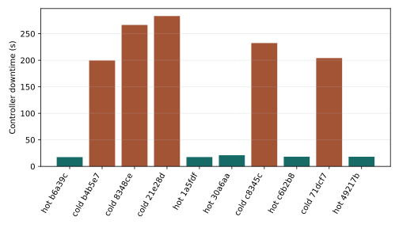
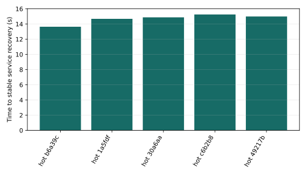
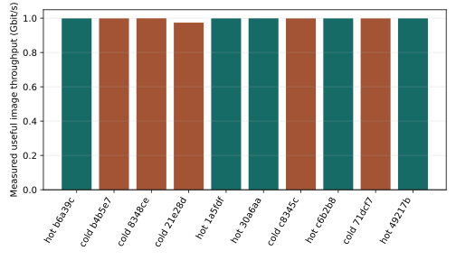
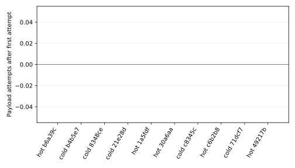
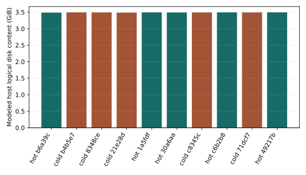
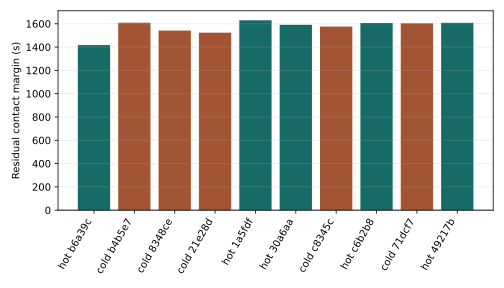
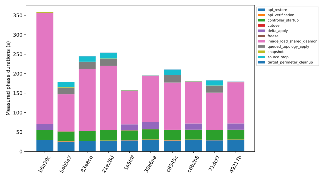

Prove principali registrate: 0/18. Una replica per caso rappresentativo.
Representative cases with one replica per combination; no statistical significance claim
| run_id | purpose | method | configured_rate_bps | outcome | controller_downtime_s |
|---|---|---|---|---|---|
| run-3d344ec3bef348949cbeea8ffbb6a39c | functional-gate | hot | 1000000000 | success | 17.43508550000024 |
| run-4f8b36918fa84fe1824fdbbd62b4b5e7 | calibration | cold | 1000000000 | success | 199.64847139999983 |
| run-6432dfbcb42c4f8389633545088348ce | calibration | cold | 1000000000 | success | 266.5459843000008 |
| run-6e38db1cbce9438490eaace1f621e28d | functional-gate | cold | 1000000000 | success | 283.3141108999989 |
| run-7110fbd5e001439583dc4a1f51c817fe | functional-gate | hot | 1000000000 | invalid_baseline | — |
| run-8c3ca5d5eb3e43739ff3b659931a5fdf | calibration | hot | 1000000000 | success | 17.52431280000019 |
| run-aeeaefd6b9ee4d96ae4a2ae98730a6aa | functional-gate | hot | 1000000000 | success | 21.0374122000012 |
| run-af14138acdaa42c28b6ac347c9c8345c | functional-gate | cold | 1000000000 | success | 232.4457149000009 |
| run-bbfd97d308f2468fbcf4fdc43cc6b2b8 | calibration | hot | 1000000000 | success | 18.27578209999956 |
| run-cdb40dfde56a4842bf64a99070296cac | functional-gate | hot | 1000000000 | invalid_baseline | — |
| run-da5ae7d6ca1342b0b3fbe819f471dcf7 | calibration | cold | 1000000000 | success | 204.20459309999933 |
| run-ec606f1f32d049dd89af170d6749217b | calibration | hot | 1000000000 | success | 18.1907844999987 |






